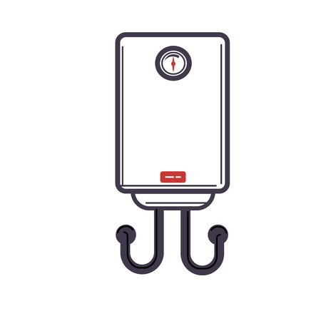
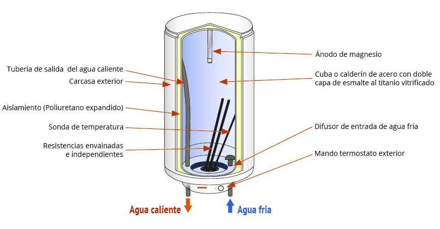
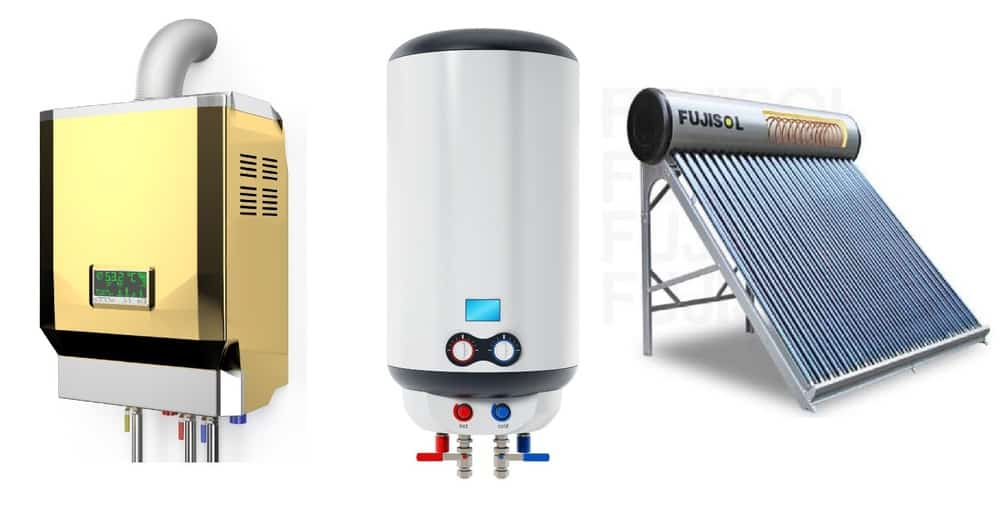

Introducción
Los calentadores de agua eléctricos son dispositivos fundamentales en la vida moderna, proporcionando confort y eficiencia en el suministro de agua caliente sanitaria (ACS). A diferencia de los sistemas de gas o energía solar, estos equipos destacan por su facilidad de instalación, seguridad y adaptabilidad a diferentes entornos.
Este informe tiene como objetivo analizar en profundidad su funcionamiento, componentes, eficiencia energética, impacto ambiental y mantenimiento. Además, se incluyen recomendaciones para optimizar su uso y se exploran las últimas innovaciones en el sector.
Historia y Evolución de los Calentadores de Agua
Los primeros calentadores de agua surgieron a finales del siglo XIX, coincidiendo con la expansión de la electricidad en los hogares. Inicialmente, eran sistemas rudimentarios que requerían mucho tiempo para calentar el agua. Con el tiempo, se introdujeron mejoras como:

- Resistencias más eficientes (de cobre y cerámica)
- Aislamiento térmico avanzado (poliuretano expandido)
- Sistemas de control digital (termostatos programables)
Hoy en día, los calentadores eléctricos son más compactos, seguros y eficientes, gracias a avances en materiales y electrónica.
Funcionamiento Interno
Proceso de Calentamiento
- Entrada de agua fría: El agua ingresa por el difusor de entrada, ubicado en la parte inferior del tanque.
- Calentamiento por resistencia: Las resistencias (sumergidas o envainadas) elevan la temperatura del agua hasta el nivel establecido por el termostato (generalmente entre 55°C y 75°C).
- Almacenamiento: El agua caliente se mantiene en el calderín, un tanque de acero con recubrimiento vitrificado para evitar la corrosión.
- Salida de agua caliente: Al abrir un grifo, el agua sale por la tubería superior mientras el sistema repone agua fría.
Componentes Clave

| Componente |
Función |
| Resistencias |
Calientan el agua (sumergidas o envainadas) |
| Termostato |
Controla la temperatura y evita sobrecalentamientos |
| Ánodo de magnesio |
Protege el tanque de la corrosión causada por la cal |
| Válvula de seguridad |
Regula la presión interna para evitar explosiones |
| Aislamiento térmico |
Reduce las pérdidas de calor (poliuretano expandido) |
Tipos de Calentadores Eléctricos
4.1. Por Tipo de Resistencia
- Resistencia blindada (sumergida): En contacto directo con el agua, calienta más rápido pero es vulnerable a la cal.
- Resistencia envainada (cerámica): Protegida por una vaina, ideal para aguas duras.
4.2. Por Sistema de Almacenamiento
- Acumuladores: Mantienen agua caliente en un tanque (más consumo, pero suministro constante).
- Instantáneos: Calientan el agua al momento (menor consumo, pero flujo limitado).
Ventajas y Desventajas
| Ventajas |
Desventajas |
| ✔ No emite gases tóxicos |
✖ Alto consumo eléctrico |
| ✔ Fácil instalación en espacios pequeños |
✖ Vida útil reducida en zonas con agua dura |
| ✔ Bajo mantenimiento |
✖ Mayor costo operativo frente al gas |
Consumo Energético y Eficiencia
6.1. Factores que Influyen en el Consumo
- Capacidad del tanque (a mayor litros, mayor consumo)
- Temperatura configurada (cada 10°C extra aumentan un 5% el gasto)
- Frecuencia de uso (hogares grandes consumen más)
6.2. Comparación con Otras Tecnologías

| Tecnología |
Consumo Anual (kWh) |
Costo Anual ($) |
| Eléctrico |
1,500–3,000 |
300–600 |
| Gas |
800–1,500 |
200–400 |
| Solar |
200–500 |
50–150 |
Impacto Ambiental y Sostenibilidad
- Huella de carbono: Depende de la fuente de electricidad (renovable vs. combustibles fósiles)
- Reciclaje: Los componentes metálicos (acero, cobre) son reciclables
- Innovaciones: Hibridación con paneles solares para reducir el consumo
Mantenimiento y Vida Útil
8.1. Pasos para un Mantenimiento Adecuado
- Revisar el ánodo de magnesio cada 2 años (evita corrosión)
- Limpiar sedimentos del tanque anualmente (mejora eficiencia)
- Verificar el termostato para evitar sobrecalentamientos
8.2. Fallos Comunes y Soluciones
| Problema |
Causa |
Solución |
| Agua no caliente |
Resistencia quemada |
Reemplazar resistencia |
| Fugas en el tanque |
Corrosión interna |
Cambiar ánodo o tanque |
Innovaciones Tecnológicas y Futuro
- Termostatos inteligentes: Control remoto vía WiFi y programación horaria
- Resistencias de bajo consumo: Mejor transferencia térmica
- Sistemas híbridos: Combinación con energía solar o bombas de calor
Recomendaciones para el Consumidor
- Elegir un modelo con resistencia envainada
- Ajustar la temperatura a 60°C para equilibrar eficiencia y confort
- Considerar paneles solares para reducir costos a largo plazo
Conclusión
Los calentadores eléctricos son una solución segura y versátil para el suministro de agua caliente, aunque su consumo energético es un factor crítico. Con un mantenimiento adecuado y la adopción de tecnologías eficientes, pueden ser una opción sostenible para el hogar.